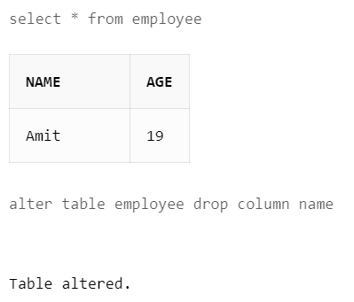

ALTER TABLE Command
The ALTER TABLE statement is used to add, delete, or modify columns in an existing table.
The ALTER TABLE statement is also used to add and drop various constraints on an existing table.
ALTER TABLE - ADD Column
- Syntax:
ALTER TABLE table_name
ADD column_name datatype;
- Example:
ALTER TABLE student
ADD fathername varchar(40);
ALTER TABLE - DROP Column
- Syntax:
ALTER TABLE table_name
DROP column_name;
- Example----->

ALTER TABLE - Rename Column
- Syntax:
ALTER TABLE table_name
RENAME COLUMN old_name to new_name;
- Example:
ALTER TABLE student
RENAME COLUMN rollno to admissionno;
ALTER TABLE - Modify Column
- Syntax:
ALTER TABLE table_name
MODIFY COLUMN column_name datatype;
- Example----->
Alter Table students
Modify column rollno bigint;